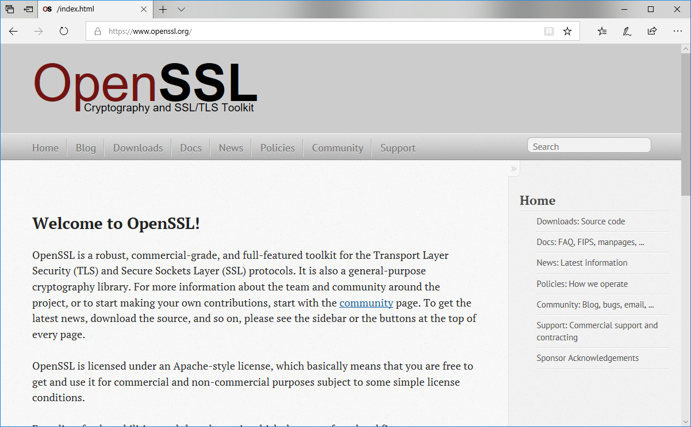
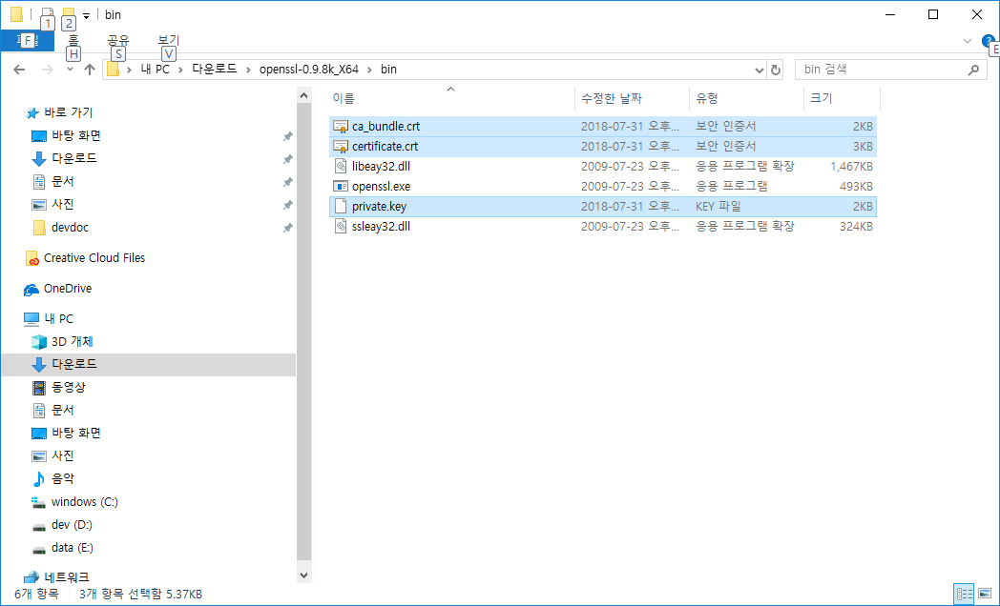
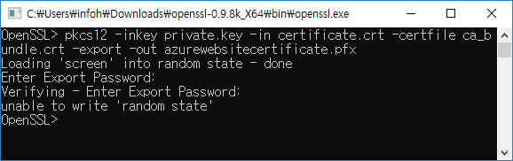
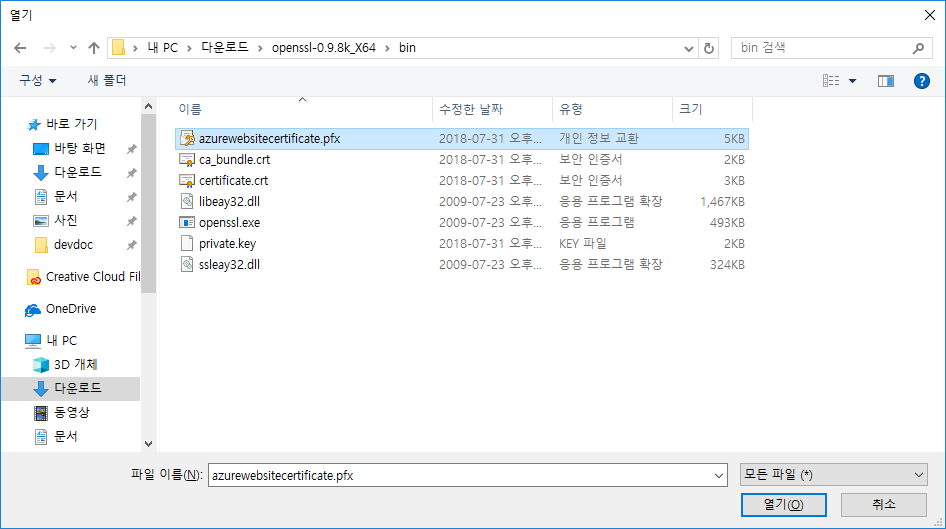

JINYDEV
다양한 IT기술관련 정보를 제공합니다.
개발에 관련된 시스템 및 도구 사용법과 프로그래밍에 대한 언어와 기법들에 대해서 같이 설명을 합니다.
학습량이 많은 쳅터는 별도의 저장로 이동하여 제공합니다.
개발에 관련된 시스템 및 도구 사용법과 프로그래밍에 대한 언어와 기법들에 대해서 같이 설명을 합니다.
학습량이 많은 쳅터는 별도의 저장로 이동하여 제공합니다.
다운로드 받은 SSL 인증서를 통하여 Azure에서 사용하기 위해서는 pfx 형태로 변경을 해야 합니다. openssl을 통하여 이를 쉽게 변경작업 할 수 있습니다.

openSSL 파일은 http://code.google.com/p/openssl-for-windows/downloads/list 에서 다운로드 받을 수 있습니다. 자신에 윈도우에 맞는 최신버전 zip 파일 다운로드 합니다. 다운로드 받은 압축 파일을 풀어 줍니다.

편하게 작업하기 위해서 다운로드 받은 SSL 인증서를 이곳에 복사를 합니다. openssl.exe 파일을 클릭하여 실행합니다.
애저용 PFX 인증 파일을 생성합니다. openssl을 실행후에 다음과 같이 코드를 복사하여 실행합니다.
pkcs12 -inkey private.key -in certificate.crt -certfile ca_bundle.crt -export -out azurewebsitecertificate.pfx

명령을 입력하면, 인증서에 대한 비밀번호를 입력요구를 합니다. 두번 입력을 합니다. 정상적으로 인증서 생성이 성공되었으면 창을 닫아 주시면 됩니다.

정상적으로 애저에서 등록 사용할 수 있는 azurewebsitecertificate.pfx 인증서 파일이 생성 된 것을 확인 할 수 있습니다.